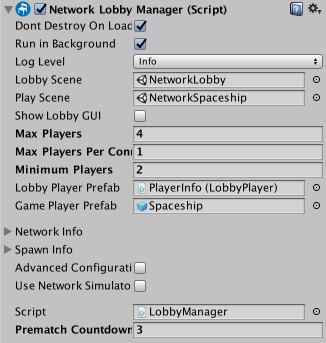

Network Lobby Manager
The NetworkLobbyManager is a specialized type of NetworkManager that provides a multiplayer lobby before entering the main play scene of the game. It allows you to set up a network with:
- A maximum player limit
- Automatic start when all players are ready
- Option to prevent players from joining a game in progress
- Support for "Couch Multiplayer" (i.e. multiple players per client)
- Customizable ways for players to choose options while in lobby
There are two types of player objects with the NetworkLobbyManager:
LobbyPlayer Object
- One for each player
- Created when client connects, or player is added
- Persists until client disconnects
- Holds ready flag and configuration data
- Handles commands in the lobby
- should use the NetworkLobbyPlayer component
GamePlayer Object
- One for each player
- Created when game scene is started
- Destroyed when re-entering lobby
- Handles commands in the game
Properties
| Property: | Function: |
|---|---|
| showLobbyGUI | Show the developer OnGUI controls for the lobby. |
| maxPlayers | The maximum number of players allowed in the lobby. |
| maxPlayersPerConnection | The maximum number of players allowed to be added for each client connection. |
| lobbyPlayerPrefab | The prefab to create for players when they enter the lobby. |
| gamePlayerPrefab | The prefab to create for players when the game starts. |
| lobbyScene | The scene to use for the lobby. |
| playScene | The scene to use for main game play. |
Details
- The lobbyPlayerPrefab slot should be filled by an object with the NetworkLobbyPlayer component on it.
- There is a GUI for the lobby manager. See the multiplayer-lobby asset package.
Network Lobby Manager
The Network Lobby Manager is a specialized type of NetworkManager that provides an easy-to-use multiplayer lobby before entering the main play scene of the game.
The Network Lobby Manager has many built-in features that are common to multiplayer games. For instance, it supports setting a maximum player limit, automatically starting the game when all players are ready, and an option to prevent players from joining an in-progress game. The Network Lobby Manager also supports "Couch Multiplayer" where multiple players are using the same client to play together.

| Property: | Function: |
|---|---|
| Show Lobby GUI | Enable this to show the developer GUI controls for the lobby. This is only intended to be used to facilitate developer ease of use. You should create your own UI for players to use in your finished game. |
| Max Players | The maximum number of players allowed in the lobby. |
| Max Players Per Connection | The maximum number of players allowed to be added for each client connection. |
| Min Players | The minimum number of players required by the lobby. |
| Lobby Player Prefab | The prefab to create for players when they enter the lobby. |
| Game Player Prefab | The prefab to create for players when the game starts. |
| Lobby Scene | The scene to use for the lobby. |
| Play Scene | The scene to use for main game play. |